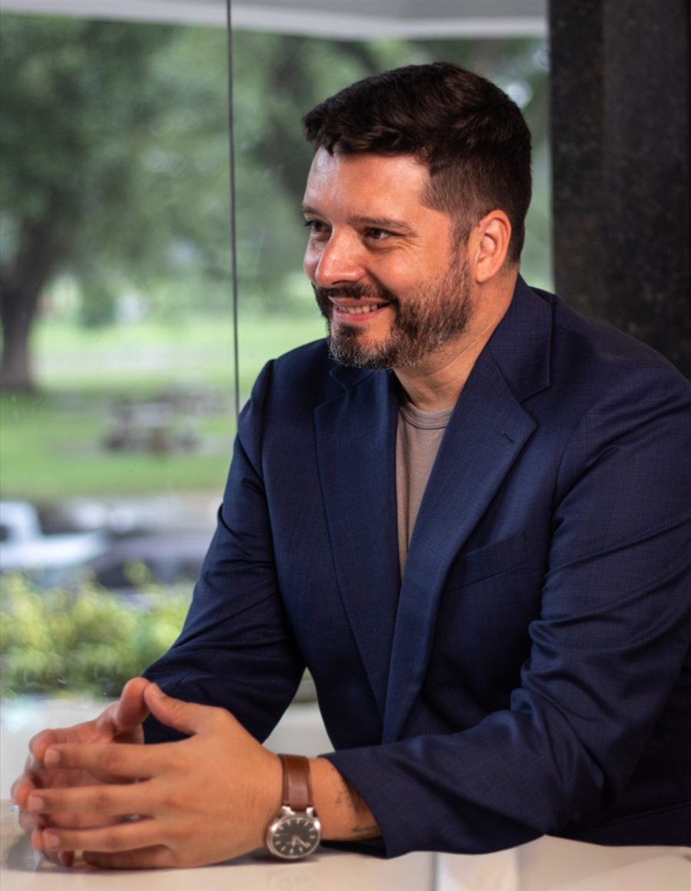

15+ años construyendosistemas críticos
Diseño sistemas que no se pueden caer.
Una trayectoria construida en tecnología, infraestructura cloud y ciberseguridad.
Durante 15 años construí la infraestructura que sostiene bancos, estudios de videojuegos y empresas que no se pueden dar el lujo de fallar.
Trabajé dentro de Amazon Web Services y Microsoft Azure. Hoy trabajo en ciberseguridad a escala global. Un día miré a la Argentina con esos mismos ojos y entendí algo simple: no tenemos un sistema; tenemos un armado que funciona perfecto, pero solo para ellos.
No vengo a tirar todo abajo. Vengo a construir el sistema que tiene sentido: uno donde puedas ver en tiempo real en qué se gasta cada peso y donde nadie pueda esconderse.
Experiencia en infraestructura cloud y ciberseguridad en AWS y Azure.
Viví ocho años en Canadá y cinco en México. Hoy vivo en Argentina.
Trilingüe: español, inglés y francés.
Autor de El método Ututo.